Abstract
Dynamic scene reconstruction from multi-view videos remains a fundamental challenge in computer vision. While recent neural surface reconstruction methods have achieved remarkable results in static 3D reconstruction, extending these approaches with comparable quality for dynamic scenes introduces significant computational and representational challenges. Existing dynamic methods focus on novel-view synthesis, therefore, their extracted meshes tend to be noisy. Even approaches aiming for geometric fidelity often result in too smooth meshes due to the ill-posedness of the problem. We present a novel framework for highly detailed dynamic reconstruction that extends the static 3D reconstruction method NeuralAngelo to work in dynamic settings. To that end, we start with a high-quality template scene reconstruction from the initial frame using NeuralAngelo, and then jointly optimize deformation fields that track the template and refine it based on the temporal sequence. This flexible template allows updating the geometry to include changes that cannot be modeled with the deformation field, for instance occluded parts or the changes in the topology. We show superior reconstruction accuracy in comparison to previous state-of-the-art methods on the ActorsHQ dataset.
Method
Dynamic Comparison
Reconstructed mesh sequences from ActorsHQ: MoAngelo (left) against GauSTAR, Tensor4D, HumanRF and the ground truth (right).
Qualitative Comparison
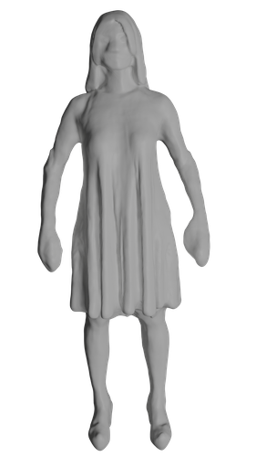
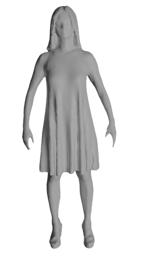
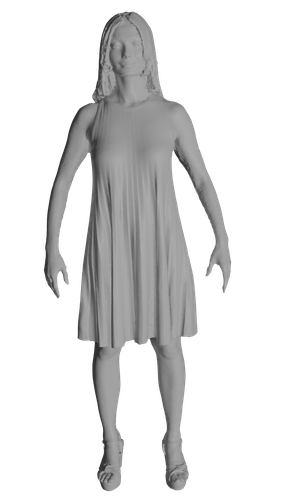
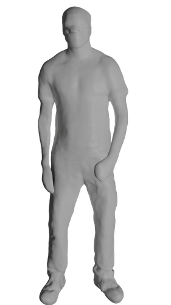
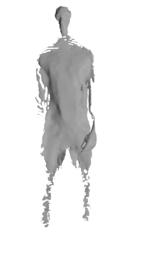
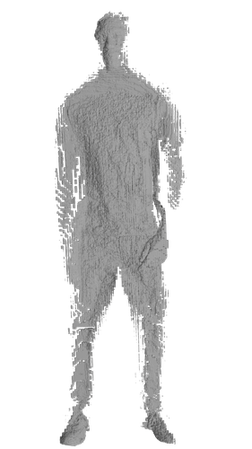
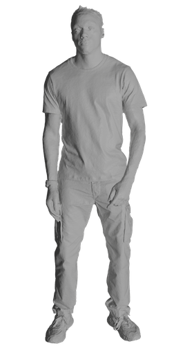
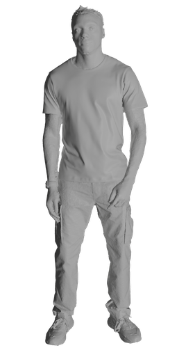
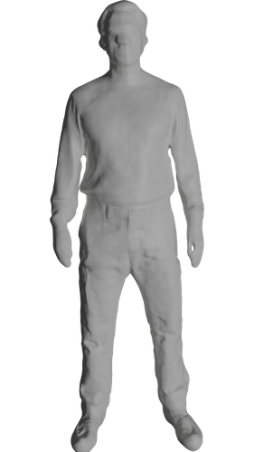
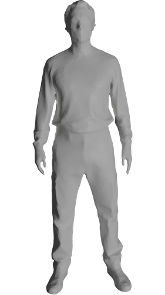
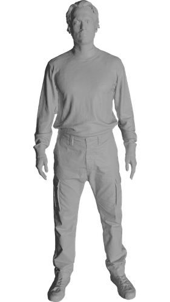
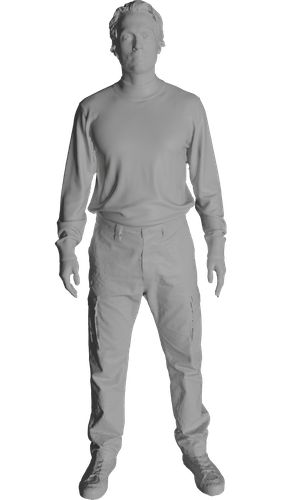
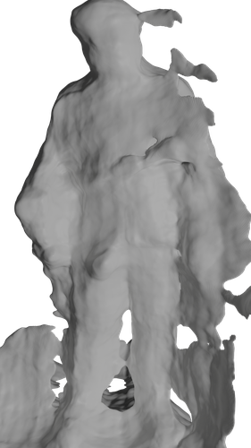
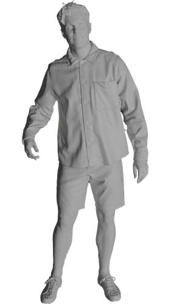
Qualitative results of competitors and MoAngelo (our method) on four scenes from the ActorsHQ dataset. Our method reconstructs the highest-fidelity geometry without unnecessary noise and does not have major failure cases.
Quantitative Results
| Scene | Tensor4D CVPR 2023 | GauSTAR CVPR 2025 | HumanRF TOG 2023 | Ours |
|---|---|---|---|---|
| Actor1 | 0.0150 | 0.00833 | 0.0091 | 0.0057 |
| Actor5 | 0.0187 | 0.2200 | 0.1100 | 0.0037 |
| Actor6_1 | 0.0160 | 0.0077 | 0.0087 | 0.0068 |
| Actor6_2 | 0.1830 | 0.0078 | 0.0088 | 0.0058 |
| Actor7 | 0.0110 | 0.0067 | 0.0046 | 0.0035 |
| Actor8 | 0.3590 | 0.0068 | 0.0119 | 0.0059 |
| Average | 0.1005 | 0.04288 | 0.0255 | 0.0052 |
Reconstruction accuracy. L1-Chamfer distance (lower is better) to the ground-truth meshes. MoAngelo provides the most accurate reconstruction on all scenes.
BibTeX
@inproceedings{ebbed2026moangelo,
title={MoAngelo: Motion-Aware Neural Surface Reconstruction for Dynamic Scenes},
author={Ebbed, Mohamed and L\"ahner, Zorah},
booktitle={International Conference on 3D Vision (3DV)},
year={2026}
}